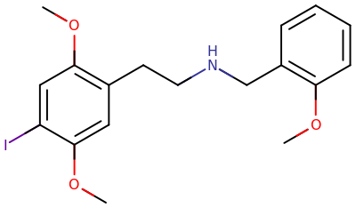

25I-NBOMe

25I-NBOMe在严重剂量下可能是致命的。[1]
强烈不建议大量服用此物质或鼻吸它。有关详细信息，请参阅此部分。
| 25I-NBOMe | |
|---|---|
| 化学命名 | |
| 通用名称 | 25i-NBOMe, 25i, Cimbi-5 |
| 取代名称 | 2C-I-NBOMe |
| 系统名称 | 2-(4-Iodo-2,5-dimethoxyphenyl)-N-[(2-methoxyphenyl)methyl]ethanamine |
| 类别归属 | |
| 精神活性类别 | 致幻剂 |
| 化学类别 | 苯乙胺类物质 |
| 给药途径 | |
| 警告： 由于个体体重、耐受性、代谢和个人敏感度的差异，请务必从较低剂量开始。见负责任的用药部分。 | |
| ⬇ 舌下含服 | |
| 给药剂量 | |
| 阈值 | 50 µg |
| 轻微 | 200 - 500 µg |
| 中等 | 500 - 700 µg |
| 强烈 | 700 - 1000 µg |
| 严重 | 25I-NBOMe在严重剂量下可能是致命的。[1] |
| 药效时长 | |
| 总时长 | 6 - 10 小时 |
| 药效发作 | 15 - 120 分钟 |
| 药效上升 | 30 - 120 分钟 |
| 药效达峰 | 2 - 4 小时 |
| 药效褪去 | 1 - 4 小时 |
| 药效残余 | 3 - 6 天 |
| ⬇ 鼻吸 | |
| 给药剂量 | |
| 阈值 | 50 µg |
| 轻微 | 200 - 500 µg |
| 中等 | 500 - 700 µg |
| 强烈 | 700+ µg |
| 严重 | 25I-NBOMe在严重剂量下可能是致命的。[2] |
| 药效时长 | |
| 总时长 | 4 - 6 小时 |
| 药效发作 | 5 - 10 分钟 |
| 药效上升 | 10 - 30 分钟 |
| 药效达峰 | 60 - 120 分钟 |
| 药效褪去 | 120 - 180 分钟 |
| 药效残余 | 1 - 7 天 |
| 免责声明： 本站的给药剂量信息收集自用户和资源，仅供教育目的。它不是推荐，应与其他来源核实准确性。 | |
| 药物联用 | |
| 2C-T-X | ⛔ 严禁联用 |
| 5-MeO-xxT | ⛔ 严禁联用 |
| 咖啡因 | ⚠️ 谨慎联用 |
| 大麻 | ⚠️ 谨慎联用 |
| DOx | ⛔ 严禁联用 |
| 单胺氧化酶抑制剂 | ⛔ 严禁联用 |
| MDMA | ⛔ 严禁联用 |
| MXE | ⛔ 严禁联用 |
| 苯丙胺类物质 | ⛔ 严禁联用 |
| aMT | ⛔ 严禁联用 |
| 可卡因 | ⛔ 严禁联用 |
| 右美沙芬 | ⛔ 严禁联用 |
| 曲马多 | ⛔ 严禁联用 |
| 锂 | ⛔ 严禁联用 |
25I-NBOMe（也称为 2C-I-NBOMe、NBOMe-2C-I、Cimbi-5、Smiles，以及多种被称为 N-Bomb 的药物之一）是一种苯乙胺类物质化学类别的新型迷幻剂，在给药时会产生一系列以视觉为主导和刺激性的迷幻效应。
25I-NBOMe 这个名字是 2C-I-NBOMe 的简写，它是苯乙胺类迷幻剂 2C-I 的衍生物。它最早由柏林自由大学的 Ralf Heim 于 2003 年合成并记录。[3] 随后，普渡大学由 David Nichols 领导的团队对其进行了进一步研究。[4] 它以 11C 放射性标记形式被研究，作为使用正电子发射断层扫描（PET）绘制大脑中 5-HT2A 受体分布的潜在配体。[5][6]
值得注意的是，NBOMe 家族的化合物（任何一种都可能被称为“N-Bomb”，尤其是 25I-NBOMe 和 25N-NBOMe）应通过舌下含服给药，即将其放入并含在口中，让其在 15-25 分钟内吸收。
关于 25I-NBOMe 在人体内的药理特性、代谢和毒性知之甚少。在 2010 年作为策划药在线销售之前，它没有人用历史。它与许多死亡和住院事件有关。轶事报告表明，由于其高度敏感的剂量反应和不可预测的效应，这种物质可能难以安全使用。
目录
化学
25I-NBOMe 或 2C-I-NBOMe 是一种被称为 2C-I 的取代苯乙胺类迷幻剂的血清素能 N-苄基衍生物。25I-NBOMe 是一种取代苯乙胺，其甲氧基 CH3O- 连接在碳 R2 和 R5 上，碘原子连接在碳 R4 上。它在结构上与 2C-I 的不同之处在于胺基 (NH2) 上有一个 2-甲氧基苄基 (BOMe) 基团取代。25I-NBOMe 与 NBOMe 家族的其他化学物质共享此 2-甲氧基苄基取代。该 NBOMe 添加包含一个结合在 R2 苯环上的甲氧基醚 CH3O-。
药理学
更多信息：血清素能致幻剂
25I-NBOMe 在 5-HT2A 受体上具有功效，在此处它充当全激动剂。[5] 然而，这些相互作用的作用以及它们如何导致迷幻体验仍然难以捉摸。
在迷幻剂中，这种化合物在与 5-HT2a 受体结合的高效力、亲和力和选择性方面被认为是药理学上独特的。[5] 与流行的看法相反，它不是一种“全激动剂”，尽管人们对其产生的效应与包括传统迷幻剂在内的其他 5-HT2a 部分激动剂有何不同提出了疑问。
以下靶点的 Ki 值大于 500 Ki：5-HT1A、D3、H2、5-HT1D、α1A 肾上腺素能、δ 阿片、血清素再摄取转运蛋白、5-HT5A、5-HT1B、D2、5-HT7、D1、5-HT3、5-HT1E、D5、毒蕈碱 M1-M5、H3 和多巴胺再摄取转运蛋白。[7]
| 受体 | Ki (nM) | ± |
|---|---|---|
| 5-HT2A | 0.044 | |
| 5-HT2C | 2 | |
| 5-HT6 | 73 | 12 |
| μ-阿片 | 82 | 14 |
| H1 | 189 | 35 |
| 5-HT2B | 231 | 73 |
| κ-阿片 | 288 | 50 |
主观效应
免责声明：* 下列效应引用自主观效应索引 (SEI*)，这是一个基于轶事用户报告和 PsychonautWiki 贡献者个人分析的开放研究文献。因此，应以健康的怀疑态度看待它们。
值得注意的是，这些效应不一定会以可预测或可靠的方式发生，尽管较高的剂量更可能诱发全方位的效应。同样，不良反应随着剂量的增加而变得越来越可能，可能包括成瘾、严重伤害或死亡 ☠。
躯体效应 
- 刺激 - 就其对使用者身体能量水平的影响而言，25I-NBOMe 通常被认为是非常充满活力和刺激性的。对于大多数人来说，这种物质会诱发一种独特类型的身体刺激，可以描述为感觉精力极其充沛，但这种方式不会强迫旅程者移动，除非他们真的选择这样做。然而，对于其他人来说，这种刺激可能是相当无法控制的，偶尔会导致身体颤抖和磨牙，类似于 MDMA 和传统兴奋剂如苯丙胺。
- 躯体轻盈感 - 就身体的感知重量而言，这种物质始终让人感觉极其轻盈，通常达到完全失重的程度。
- 自发性躯体感觉 - “身体快感”本身可以描述为一种温和的、包罗万象的、柔软但欣快的刺痛感。这种刺痛感还伴随着自发的欣快冲击，其持续时间与消耗的剂量成正比，变得更长和更持久。
- 口腔麻木 - 假设物质是舌下含服的，在舌下吸收后，人们会立即注意到的第一个躯体效应是强烈的、不愉快的金属化学味道。这伴随着非常明显的舌头和口腔普遍麻木感，在吸墨纸消耗后可持续长达一小时。
- 恶心 - 当使用者开始起效时，恶心并不少见，有时会导致初期呕吐，尽管恶心通常在使用者呕吐或旅程完全开始后消失。与其他迷幻剂如赛洛辛、2C-E 和 2C-I 相比，这实际上可以被认为强度非常温和。
- 体温调节抑制
- 心律异常
- 心率增快
- 血压升高
- 肌肉颤动
- 肌肉痉挛
- 肌肉紧张
- 味觉幻觉
- 血管收缩
- 食欲抑制
- 胃痉挛
- 脱水
- 口干
- 排尿困难 或 尿频
- 不宁腿
- 瞳孔扩大
- 头痛
- 癫痫发作 - 这种效应在超过严重剂量的剂量下更为常见，可能表现为癫痫持续状态，即癫痫发作持续超过 5 分钟或在没有医疗干预的情况下不会停止。
- 横纹肌溶解
视觉效应 
增强
抑制
扭曲
- 漂移 （融化、流动、呼吸 和 变形） - 与其他迷幻剂相比，这种效应可以描述为高度详细、运动缓慢且平滑、外观静止且风格不切实际/卡通化。
- 颜色偏移
- 颜色替换
- 颜色染色
- 深度感知扭曲
- 透视扭曲
- 残影
- 衍射
- 亮度改变
- 后像
- 对称纹理重复
- 递归
- 风景切片
几何图形
25I-NBOMe 产生的视觉几何图形类似于 LSD，可以全面描述为几何风格的算法化，复杂的复杂性，细节精细且缩小，运动快速且平滑，形状结构化，色彩丰富，颜色有光泽，边缘锋利，角落处同样有棱角和圆润。与其他更常用的迷幻剂相比，它们可以被描述为比 2C-I 和大多数 2C-x 家族中的视觉几何图形更加复杂，并且在适当的高剂量下与 LSD、赛洛辛 和 DMT 完全相当。
25I-NBOMe 的几何图形可靠地导致 8A 级 视觉几何图形，而 8B 级 至今未得到证实。当使用者盯着中心点时，视觉强度似乎能够持续增强。这最终会笼罩视野，并产生一种旅程者已经突破到一个不断变化的几何景观或结构的感觉，并赋予其巨大的沉浸式物理尺寸感。
幻觉状态
25I-NBOMe 能够极其一致地产生 1-3 级范围内的全方位幻觉状态。然而，据报道有 4 级幻觉突破，但与 赛洛辛、2C-E 和 DMT 等其他更常用的迷幻剂相比，非常不同且不一致。
这些效应包括：
- 变形
- 机械景观 - 这种成分是一种不常见的效应，通常只在非常强烈到严重的剂量下发生。它也往往伴随着压倒性的甚至危险的身体和认知效应。
- 内部幻觉 - （设置、风景和景观；透视幻觉 和 场景和情节）。这些在黑暗环境中更为常见，并且在其总体主题上可以描述为可信度清晰、风格互动，几乎完全是个人的、宗教的、精神的、科幻的、幻想的、超现实的、无意义的或超验的性质。
认知效应 
- 与经典迷幻剂相比，许多人描述 25I-NBOMe 的认知效应明显较轻。人们报告说感觉他们的思维流在低到中等剂量下保持了总体正常，这并不罕见。然而，在高剂量下，会出现强烈到压倒性的认知改变，这可能导致困惑、健忘和一般的感官超载状态。
最突出的认知效应通常包括：
- 分析增强 - 这种效应通常只在低剂量下出现。
- 思维加速 和 思维减速 - 尽管 25i-NBOME 的效应之一是思维加速，但在较高剂量下可能会发生相反的情况。
- 概念性思维 - 与传统迷幻剂相比，这种效应被认为非常温和。
- 焦虑 & 偏执 - 这种效应似乎比其他迷幻剂更容易发生，可能是由于其非常突出的刺激特性。
- 共情、情感和社交能力增强 - 共情剂效应从温和到强烈不等，但表现不一致。尝试这种物质的人的共情效应通常在有他人在场时变得突出。这些增加的社交、爱和同理心的感觉似乎并不像其他共情剂（如 MDMA、2C-B 和 AMT）中发现的那样强烈或深刻。
- 记忆抑制
- 新颖感增强
- 沉浸感增强
- 情绪增强
- 幽默感增强
- 音乐欣赏增强
- 个人偏见抑制
- 性欲增强
- 时间扭曲
- 清醒
- HPPD
听觉效应 
多感官效应  **
**
- 剂量独立强度 - 虽然原因尚不清楚，但许多报告表明，即使以看似相同的剂量服用，这种物质也会以不可预测的方式产生出乎意料的强烈或微弱的效应。这可能会导致它比大多数其他迷幻剂具有相对更高的风险。
- 联觉 - 在其最充分的表现中，这是一种非常罕见且不可再现的效应。增加剂量可以增加这种情况发生的可能性，但似乎只是那些已经倾向于联觉状态的人体验中的突出部分。
认知效应
体验报告
描述此化合物在我们体验索引中的效应的轶事报告包括：
- Experience:1000ug / 1 tab - No sense of enlightenment but absolutely breath taking visuals
- Experience:Becoming a god with my boyfriend
- Experience:Unknown dosage - Ego death and becoming one with a singular entity
- Experience:Unknown dosage / 1 tabs - Prolonged unity and messiah syndrome at school
- Experience:Unknown dosage / 3 tabs - Ego death and a total break through in the snow
其他体验报告可以在这里找到：
毒性和危害潜力
更多信息：研究化学品 § 毒性和危害潜力，和 负责任的用药 § 致幻剂
NBOMes 的短期和长期损害偶尔与看似随机的人出现的严重身心问题有关，包括记忆和语言困难、心脏问题、HPPD，在某些情况下还有焦虑和 PTSD，这些都源于特别困难的经历。
25I-NBOMe 是一种相对较新的物质，对其药理风险或与其他物质的相互作用知之甚少。尚未确定 LD50，但在严重剂量下可能有致命风险。[1] 本站建议，由于 25I-NBOMe 的极端效力，不应进行鼻吸，因为这种给药方法在过去一年中似乎导致了数起死亡事件。
这种物质在 2012 年初引起了媒体关注，当时在弗吉尼亚州里士满及其周边地区报告了七起非致命药物过量事件。[8][9] 截至 2013 年 5 月，据报道 25I-NBOMe 在美国已导致五起过量死亡。[10] 2012 年 6 月，北达科他州大福克斯和明尼苏达州东大福克斯的两名青少年因服用据称是 25I-NBOMe 的物质而致命过量，导致两名涉案方被判长期徒刑，并对这家位于德克萨斯州的在线供应商提起联邦起诉。[11]
2012 年 10 月，阿肯色州小石城的一名 21 岁男子在音乐节上鼻吸了一滴液体形式的药物后死亡。据报道，他在之前的“几个小时”里饮用了含咖啡因的酒精饮料。目前尚不清楚他还服用了哪些其他药物，因为尸检通常不检测研究化学品的存在。[12]
澳大利亚的一名男子在 25I-NBOMe 醉酒状态下撞到树木和电线杆受伤身亡。[13]
据报道，2016 年 4 月，一名巴西 16 岁少年死于药物过量。
添加 5-HTP 会大大增加 25i-NBOME 的效应，应避免使用。
强烈建议在使用此物质时采取伤害减少措施。
耐受性和成瘾潜力
25I-NBOMe 不会形成习惯，使用的欲望实际上会随着使用而减少。它通常是自我调节的。
对 25I-NBOMe 效应的耐受性在摄入后几乎立即建立。之后，大约需要 1 周时间耐受性才能减半，2 周时间才能恢复到基线（在没有进一步消耗的情况下）。25I-NBOMe 与所有迷幻剂表现出交叉耐受性，这意味着在消耗 25I-NBOMe 后，所有迷幻剂的效应都会降低。
药物过量
由于极高的效力和看似不可预测的效应，与许多其他物质相比，NBOMe 化合物的正常剂量和过量剂量之间的余地极小。确切的中毒剂量尚不清楚，因为它似乎很大程度上取决于个人生理机能，而不是主要取决于剂量。然而，各种轶事报告表明，当超过 1000 μg 时开始出现危险的副作用，对于更敏感的人来说，在大约 2000 μg 时可能会致命。也有记录显示其他人幸存于更高的剂量，有时甚至没有任何主要的副作用。
由于很难在吸墨纸上放置如此精确的剂量，因此吸墨纸上的剂量也存在不确定性。强烈不建议鼻吸、雾化或饮用此物质的酊剂，这与许多记录在案的死亡事件有关[1][14][2]。一项研究发现，25I-NBOMe 和 25C-NBOMe 吸墨纸含有药物含量较高的“热点”，这意味着存在药物过量的固有风险。[15]
NBOMes 的过量效应通常是危险的高心率、血压、体温过高和显着的血管收缩[[16]](### 认知效应
危险的相互作用
警告： 许多精神活性物质单独使用时是相对安全的，但与某些其他物质结合使用时，可能会突然变得危险甚至危及生命。以下列表提供了一些已知的危险相互作用（尽管不保证包括所有相互作用）。
务必进行独立研究（例如 Google、DuckDuckGo、PubMed），以确保两种或多种物质的组合可以安全食用。部分列出的相互作用来自 TripSit。 由于 NBOMe 系列具有高度不可预测的性质，通常建议避免将其与其他精神活性物质混合使用。
- 2C-T-X - 2C-T-X 苯乙胺类物质的相互作用可能不可预测，而 NBOMes 即使单独使用也被认为是不可预测的。因此，应避免这种组合。
- 5-MeO-xxT - 5-MeO 色胺类物质的相互作用可能不可预测，而 NBOMes 即使单独使用也被认为是不可预测的。因此，应避免这种组合。
- 苯丙胺类物质 - 苯丙胺类物质和 NBOMes 都会提供相当大的刺激。当结合使用时，它们可能导致心动过速、高血压、血管收缩，在极端情况下会导致心力衰竭。兴奋剂的致焦虑和聚焦效应也不适合与迷幻剂结合使用，因为它们可能导致不愉快的思维循环。已知 NBOMes 会引起癫痫发作，而兴奋剂可能会增加这种风险。
- aMT
- 咖啡因 - 咖啡因可能会带出迷幻药物的自然刺激，使其令人不舒服。高剂量会导致焦虑，这在旅程中很难处理。
- 大麻 - 大麻与迷幻剂的效应具有出乎意料的强烈和不可预测的协同作用。建议对此组合谨慎行事，因为它会显着增加不良心理反应的风险，如焦虑、偏执、恐慌发作和精神病。建议使用者仅从平常大麻剂量的一小部分开始，并在两次抽吸之间长时间休息，以避免摄入过多。
- 可卡因 - 可卡因和 NBOMes 都会提供相当大的刺激。当结合使用时，它们可能导致严重的血管收缩、心动过速、高血压，在极端情况下会导致心力衰竭。
- DOx
- 右美沙芬
- 锂 - 锂通常用于治疗双相情感障碍。大量轶事证据表明，将其与迷幻剂一起服用会显着增加精神病和癫痫发作的风险。因此，严格不鼓励这种组合。
- 单胺氧化酶抑制剂 (MAOIs) - MAO-B 抑制剂可能会不可预测地增加苯乙胺类物质的效力和持续时间。
- MDMA
- MXE - 作为一种 NMDA 拮抗剂，MXE 会增强 NBOMes，这可能会导致令人不愉快的强烈感。
- 曲马多 - 众所周知，曲马多会降低癫痫发作阈值，而 NBOMes 也显示出引起严重癫痫发作的倾向。
法律地位
2014 年 9 月，欧洲理事会决定成员国应在 2015 年 10 月 2 日之前对 25I-NBOMe 实施控制措施和刑事处罚。[20]
- 澳大利亚：持有、生产和销售是非法的。[21]
- 奥地利：自 2019 年 6 月 26 日起，根据 SMG (Suchtmittelgesetz Österreich)，持有、生产和销售 25I-NBOMe 是非法的。[22]
- 巴西：由于被列入 Portaria SVS/MS nº 344，持有、生产和销售是非法的。[23]
- 加拿大：25I-NBOMe 被视为附表 III，因为它是 2,5-二甲氧基苯乙胺的衍生物。[24]
- 中国：截至 2015 年 10 月，25I-NBOMe 在中国是受管制物质。[25]
- 丹麦：25I-NBOMe 受《致幻物质行政命令》中苯乙胺类物质的一般分类控制。[26]
- 德国：截至 2014 年 12 月 13 日，25I-NBOMe 根据 Anlage I BtMG（麻醉品法，附表 I）受管制。[27][28] 未经许可制造、持有、进出口、购买、销售、获取或分发均属违法。[29]
- 芬兰：截至 2013 年 3 月 15 日，25I-NBOMe 受药品法 (395/87) 管制。[26]
- 匈牙利：25I-NBOMe 属于第 66/2012 号政府法令附表 C 中苯乙胺类物质的一般定义范围。[26]
- 以色列：该药物于 2012 年被禁止。[30]
- 意大利：在意大利，25I-NBOMe 是附表 1 受管制物质，这意味着它在该国是非法的。[31]
- 日本：自 2015 年 11 月 1 日起，25I-NBOMe 在日本为麻醉药品。[32]
- 拉脱维亚：25I-NBOMe 是附表 I 受管制物质。[33]
- 荷兰：根据鸦片法 (Opiumwet)，25I-NBOMe 被列为清单 1 (Lijst 1) 受管制物质。[34]
- 新西兰：25I-NBOMe 在新西兰是附表 2 受管制物质。[35]
- 挪威：截至 2013 年 2 月 14 日，25I-NBOMe 受苯乙胺类物质的一般调度控制。[26]
- 波兰：25I-NBOMe 属于《反毒品成瘾法》和《国家卫生检查法》（2010 年）下“替代药物”的定义。因此，其营销和生产将受到罚款（行政制裁）。[26]
- 罗马尼亚：2011 年，罗马尼亚禁止了所有精神活性物质，[36]无论它们到底是什么。[37]
- 俄罗斯：持有、生产和销售是非法的。
- 斯洛文尼亚：25I-NBOMe 被纳入修订非法药物分类的法令（RS 官方公报第 62/2013 号）。[26]
- 瑞典：25I-NBOMe 被归类为附表 I。[38]
- 瑞士：25I-NBOMe 是 Verzeichnis D 下特别命名的受管制物质。[39]
- 英国：由于 N-苄基苯乙胺类物质的包罗条款，25I-NBOMe 在英国是一类 A 药物。[40]
- 美国：2013 年 11 月 15 日，DEA 使用其紧急调度权将 25I-NBOMe 添加到附表 I 中，使其“临时”处于附表 I 中 2 年。[41]
另见
外部链接
讨论
参考文献
- ↑ 1.0 1.1 1.2 1.3 Erowid 25I-NBOMe (2C-I-NBOMe) Vault : Fatalities / Deaths
- ↑ 2.0 2.1 Erowid NBOMe (Other or Unknown NBOMe-Compound) Vault : Fatalities / Deaths
- ↑ Heim, R. (2004). "Synthese und Pharmakologie potenter 5-HT2A-Rezeptoragonisten mit N-2 -Methoxybenzyl-Partialstruktur: Entwicklung eines neuen Struktur-Wirkungskonzepts". doi:10.17169/refubium-16193. Retrieved 10 May 2013.
- ↑ Braden, M. R. (1 January 2007). "Towards a biophysical understanding of hallucinogen action". Theses and Dissertations Available from ProQuest: 1–176. Retrieved 8 August 2012.
- ↑ 5.0 5.1 5.2 5.3 Ettrup, A., Hansen, M., Santini, M. A., Paine, J., Gillings, N., Palner, M., Lehel, S., Herth, M. M., Madsen, J., Kristensen, J., Begtrup, M., Knudsen, G. M. (April 2011). "Radiosynthesis and in vivo evaluation of a series of substituted 11C-phenethylamines as 5-HT (2A) agonist PET tracers". European Journal of Nuclear Medicine and Molecular Imaging. 38 (4): 681–693. doi:10.1007/s00259-010-1686-8. ISSN 1619-7089.
- ↑ Hansen, M. (2010). Design and synthesis of selective serotonin receptor agonists for positron emission tomography imaging of the brain: PhD thesis. Faculty of Pharmaceutical Sciences, University of Copenhagen. ISBN 9788792719003.
- ↑ 7.0 7.1 Nichols, D. E., Frescas, S. P., Chemel, B. R., Rehder, K. S., Zhong, D., Lewin, A. H. (1 June 2008). "High specific activity tritium-labeled N-(2-methoxybenzyl)-2,5-dimethoxy-4-iodophenethylamine (INBMeO): a high-affinity 5-HT2A receptor-selective agonist radioligand". Bioorganic & Medicinal Chemistry. 16 (11): 6116–6123. doi:10.1016/j.bmc.2008.04.050. ISSN 1464-3391.
- ↑ Geller, L. (2012), Kids overdosing on new drug, WWBT NBC12
- ↑ New street drug causing concern among medics. Vanessa Araiza, WBRC, Feb 28, 2012, | http://www.wsfa.com/story/16977573/new-street-drug-causing-concern-among-medics
- ↑ {{Citation | title=New drug N-bomb hits the street, terrifying parents, troubling cops | url=https://www.nydailynews.com/news/national/new-synthetic-hallucinogen-n-bomb-killing-users-cops-article-1.1336327
- ↑ Breaking Bad: Digital Drug Sales, Analog Drug Deaths. Craig Malisow, Houston Press, March 13, 2013 | http://www.houstonpress.com/2013-03-14/news/motion-research-charles-carlton/
- ↑ Martin, N. (2012), 21-year-old dies after one drop of new synthetic drug at Voodoo Fest, NOLA
- ↑ New hallucinogenic drug 25B-NBOMe and 25I-NBOMe led to South Australian man's bizarre death | http://www.adelaidenow.com.au/news/south-australia/new-hallucinogenic-drug-25b-nbome-and-25i-nbome-led-to-south-australian-mans-bizarre-death/story-e6frea83-1226472672220/
- ↑ Erowid 2C-C-NBOMe (25C-NBOMe) Vault : Fatalities / Deaths
- ↑ Lützen, E., Holtkamp, M., Stamme, I., Schmid, R., Sperling, M., Pütz, M., Karst, U. (April 2020). "Multimodal imaging of hallucinogens 25C‐ and 25I‐NBOMe on blotter papers". Drug Testing and Analysis. 12 (4): 465–471. doi:10.1002/dta.2751. ISSN 1942-7603.
- ↑ Marchi, N. C., Scherer, J. N., Fara, L. S., Remy, L., Ornel, R., Reis, M., Zamboni, A., Paim, M., Fiorentin, T. R., Wayhs, C. A. Y., Von Diemen, L., Pechansky, F., Kessler, F. H. P., Limberger, R. P. (1 March 2019). "Clinical and Toxicological Profile of NBOMes: A Systematic Review". Psychosomatics. 60 (2): 129–138. doi:10.1016/j.psym.2018.11.002. ISSN 0033-3182.
- ↑ Yoon, K. S., Yun, J., Kim, Y.-H., Shin, J., Kim, S. J., Seo, J.-W., Hyun, S.-A., Suh, S. K., Cha, H. J. (1 April 2019). "2-(2,5-Dimethoxy-4-methylphenyl)-N-(2-methoxybenzyl)ethanamine (25D-NBOMe) and N-(2-methoxybenzyl)-2,5-dimethoxy-4-chlorophenethylamine (25C-NBOMe) induce adverse cardiac effects in vitro and in vivo". Toxicology Letters. 304: 50–57. doi:10.1016/j.toxlet.2019.01.004. ISSN 0378-4274.
- ↑ https://psychonautwiki.org/wiki/File:Nbome_death_news_i2013e0190_disp.jpg
- ↑ https://psychonautwiki.org/wiki/File:Nbome_death_news_i2013e0191_disp.jpg
- ↑ "Council Implementing Decision on subjecting 25I-NBOMe, AH-7921, MDPV and methoxetamine to control measures". Official Journal of the European Union. Office for Official Publications of the European Communites (published October 1, 2014). September 25, 2014. pp. 22–26. OCLC 52224955. L 287.
- ↑ https://web.archive.org/web/20160602092257/https://www.legislation.gov.au/Details/F2015L01534/Html/Text#_Toc420496379
- ↑ https://www.ris.bka.gv.at/Dokumente/BgblAuth/BGBLA_2019_II_167/BGBLA_2019_II_167.pdfsig
- ↑ http://portal.anvisa.gov.br/documents/10181/3115436/%281%29RDC_130_2016_.pdf/fc7ea407-3ff5-4fc1-bcfe-2f37504d28b7
- ↑ Branch, L. S. (2022), Consolidated federal laws of Canada, Controlled Drugs and Substances Act
- ↑ http://www.sfda.gov.cn/WS01/CL0056/130753.html | 关于印发《非药用类麻醉药品和精神药品列管办法》的通知
- ↑ 26.0 26.1 26.2 26.3 26.4 26.5 "25I-NBOMe: EMCDDA–Europol Joint Report on a new psychoactive substance: 25I-NBOMe (4-iodo-2,5-dimethoxy-N-(2-methoxybenzyl)phenethylamine)" (PDF). European Monitoring Centre for Drugs and Drug Addiction. 2014. doi:10.2810/27828. ISBN 978-92-9168-682-7. ISSN 1977-7868. Retrieved February 18, 2020.
- ↑ "Anlage I BtMG" (in German). Bundesministerium der Justiz und für Verbraucherschutz. Retrieved December 11, 2019.
- ↑ "Achtundzwanzigste Verordnung zur Änderung betäubungsmittelrechtlicher Vorschriften" (PDF) (in German). Bundesanzeiger Verlag. Retrieved December 11, 2019.
- ↑ "§ 29 BtMG" (in German). Bundesministerium der Justiz und für Verbraucherschutz. Retrieved December 11, 2019.
- ↑ http://www.health.gov.il/LegislationLibrary/25574413.pdf
- ↑ Tabella 1 Stupefacenti dello Stato Italiano |http://www.salute.gov.it/imgs/C_17_pagineAree_3729_listaFile_itemName_0_file.pdf
- ↑ 新たに４物質を麻薬に指定し、規制の強化を図ります ｜報道発表資料｜厚生労働省, 厚生労働省 [Ministry of Health, Labour and Welfare (MHLW)]
- ↑ Zaudējis spēku - Noteikumi par Latvijā kontrolējamajām narkotiskajām vielām, psihotropajām vielām un prekursoriem
- ↑ https://wetten.overheid.nl/BWBR0001941/2024-04-16#BijlageI
- ↑ Misuse of Drugs Act 1975 No 116 (as at 07 December 2021), Public Act – New Zealand Legislation
- ↑ Takács, I. G. (2013), Colored City: Recreational drug use in Belgrade
- ↑ http://www.dreptonline.ro/legislatie/legea_194_2011_comba
- ↑ Läkemedelsverkets författningssamling (PDF)
- ↑ "Verordnung des EDI über die Verzeichnisse der Betäubungsmittel, psychotropen Stoffe, Vorläuferstoffe und Hilfschemikalien" (in German). Bundeskanzlei [Federal Chancellery of Switzerland]. Retrieved January 1, 2020.
- ↑ The Misuse of Drugs Act 1971 (Ketamine etc.) (Amendment) Order 2014
- ↑ http://www.justice.gov/dea/divisions/hq/2013/hq111513.shtml
{kind=link}
{kind=link}